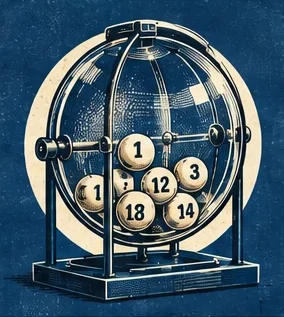
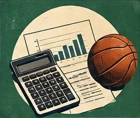

Ben Stupendous
Ben Stupendous writes Insights, The Marginal Player’s column on what NBA players are worth. He is an economist from Boston, a Celtics fan, and terrible at playing basketball himself.
InsightsCan a group of players be better or worse together?Do synergies exist, or should teams just roll out the best players?

InsightsDoes the Coach Matter?Coaches get fired for losing. Do they actually change whether a team wins?

InsightsThe Most and Least Valuable Deals, in the Past and TodayEvery negotiated NBA deal since 1999, and every one still running, valued as what the player was worth minus what he was paid.

InsightsCan anyone beat LeBron James?Every season since 1999-00 on one ruler: who added the most, who did it fastest, and the one active player keeping pace with the leader.
InsightsThe Best and Worst Trades, Graded TwiceEvery NBA trade since 1999-00, graded once on what was knowable the day it was made and once on how it turned out.

InsightsWhen the Voters and the Model DisagreeThe voters and the model picked different MVPs in 15 of the 26 seasons from 1999-00 to 2024-25. Here’s what the voters were valuing.
InsightsIs Anybody Actually Good at This?As my grandfather always said, the biggest room in the house is room for improvement. That goes for front offices, too.

InsightsThe Draft Model’s Report CardFifteen drafts, graded on the calls that cost real money — the stars that it got right, the ones that it got wrong — and what it makes of the 2026 class.

InsightsOur Numbers and Everyone Else’sMarcus Smart was 224th in the league last season by the box score and 53rd by the model. Each kind of rating has a record at forecasting teams, and here it is.